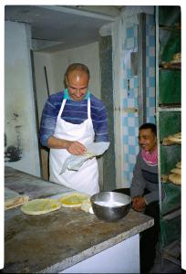
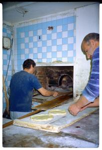
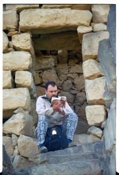
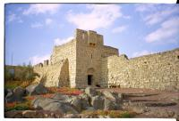
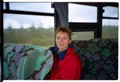

|
Jeudi 15 Février, Petra vers Amman
Adieu Petra la rose, bonjour Amman la... j'en sais rien.
La chaleureuse on n'a qu'à dire, ou la blanche. Le minibus
qui nous conduit est un peu pourri, il fait du bruit de partout
et on se demande si le moteur va tenir jusqu'au bout. La route
n'est pas franchement follichone.
La portion Petra, Shaback, Ma'an était plutôt sympa, mais
depuis on trace sur la route du désert. Et le moteur crie.
Le paysage est plutôt ... ben en fait il n'y en pas. Le désert
plat, pas même une dune, rien qui n'accroche les yeux. A peine
quelques cailloux de temps en temps. Ci-dessous : Petra, cité
nabatéenne La descente vers Aqaba il y a quelques jours, le
long de la route qui longe la frontière avec Israël était
beaucoup plus sympa. Au sud c'était le désert mais un désert
nettement plus chouette, avec du beau sable et quelques dunes.
Plus au nord, la mer morte et la vallée verdoyante du Jourdain
(le fleuve). On a pu voir des plantations diverses dont des
agrumes et des bananiers. A ce propos, j'ai lu que la Jordanie
visait l'autosuffisance alimentaire, histoire d'être indépendante
de ses voisins. Vue la stabilité de la région, on le comprend.
Du coup, ils irriguent. Beaucoup. Trop sans doûte si on considère
qu'ils sont obligés de pomper dans les nappes d'eau renouvelables
(phréatiques) mais aussi dans celles non renouvelables (fossiles
on les appelle). Il parait qu'il y a même un endroit où ils
font pousser du blé dans le désert. Compliqué tout ça. Surtout
que ce sont des problèmes qui s'ajoutent à ceux liés à la
paix dans la région....
Arrivée à Amman vers 12H. Un kébab et c'est reparti ! Ballade
au théâtre romain, sous la pluie, tant pis. Ensuite la citadelle
d'où l'on a une vue à 360° sur toute la ville (toute, toute
... il y en a encore derrière les collines !). Et toujours
sous la pluie. Ensuite séance Internet pendant au moins 3
heures : mails à la petite famille et mise à jour du site.
Et enfin grosse bouffe !
Vendredi 16 Février, Amman
Déjà 10H20 et on se décide seulement à partir à l'assaut
des châteaux du désert. Ils se trouvent à l'Est d'Amman, le
plus loin est à 110 km.
Pour y aller on a choisi la formule tout confort. Bien mieux
que la bête voiture (belgicisme) de location. Mieux encore
que la location de voiture avec chauffeur que l'on nous avait
proposée. Nous, et bien on a choisi le BUS, et même plutôt
LES bus, vu qu'il en faut au moins 4 pour y aller. Et puis
attention, on a pris toutes les options : le siège sur la
roue du bus, celui où on ne peut pas poser les pieds par terre,
celui où on a les genoux dans les dents. Et puis tant qu'à
faire, on n'a pas lésiné sur la dépense : on a pris l'option
chauffeur qui ne cause que l'arabe, c'est quand même plus
facile. Enfin, top du top, on a pris l'option du bus qui ne
part que quand il est plein (valable surtout si, comme nous,
on est les premiers dedans) et qui laisse tourner le moteur
¼ d'heure avant le départ pour profiter de l'odeur du gazoil.
Bref, on arrive au château de Lawrence, appelé ainsi à cause
dudit Laxrence d'Arabie. Ou du moins ce qu'il en reste. Le
château en lui-même est plutôt sympa, construit dans sa roche
noire. Ce qui gâche un peu l'idée que l'on peut s'en faire,
c'est cette histoire de désert. En effet, même si celui-ci
est présent partout, il faut bien reconnaître que le château
n'est pas, à proprement parler, dans le désert : il est flanqué
au bord de la route qui mène à l'Irak, parcourue par d'énormes
camions citernes... Tout de suite l'image fait moins fantasmer
! Quoiqu'il en soit le château est sympa. Et puis on vu la
chambre de Lawrence ! A proximité il y a une oasis. Ou du
moins ce qu'il en reste, là aussi. Pompée pendant des années
pour alimenter Amman et Irbid, il ne subsiste aujourd'hui
que quelques palmiers asséchés. Pas terrible. Surtout que
le quartier autour est peu dépravé.
En tous cas cette journée fut l'occasion, une fois de plus,
de vérifier l'hospitalité des Jordaniens (et d'un Algérien
aussi), toujours prêts à te rendre service, à t'emmener jusqu'à
l'arrêt de bus, à t'offrir une pomme sur le marché et à te
faire crouler sous les " welcome ".
Pour rentrer, on a fait encore plus fort qu'à l'aller. On
a pris un bus qui, en plus, était crade et avait des amortisseurs
pourris. A un tel point que je devrais être traité de menteur
rien que pour avoir utilisé le mot " amortisseur " !! Ce soir,
on a encore super bien mangé. Un demi-poulet rôti, des frites,
du taboulé, des soupes locales excellentes avec vermicelles
et blé, et une chouette assiette de bienvenue composée de
gros radis, de gros cornichons coupés en rondelles avec du
piment qui pique pour de vrai ! "
- A propos de mouton, c'est une race très particulière avec
une grande queue plate du genre " on dirait une poêle "... Alors,
on a essayé de demander à Khaled ce qu'il en était, pourquoi
ces queues de castor. Mais impossible de ce souvenir du terme
anglais, on tente alors de lui expliquer comme on peut. Et
tout d'uncoup, Lionel lui a sorti "They have a big queue"
A big "quiou" A big cul! Mort de rire...
- Au lieu de te moquer, tu ferais mieux de raconter l'histoire
avec Hussam dans le désert. Comme j'étais un peu malade, j'ai
dit à Marion, en rigolant, que j'espérais qu'il y aurait des
WC dans le désert! Mais la blague ne fut pas comprise, et
Marion, de demander à ce brave Hussam s'il y avait des toilettes
dans le désert!!! Mort de rire!!!
- C'était une bonne blague faite surtout parce que je me souciais
de tes fonds de culottes vue ta turista, gros ballot!
- Tu dis cela parce que tu es vexée! - Va prendre ton immodium!
"
Samedi 17 Février, Amman
Il pleut. Le matin c'est la course. Il faut récupérer les
photos de la mer rouge, filer sur le Net voir si on a reçu
des nouvelles, bonne idée on a des mails de David et Grégoire,
c'est bien les frangins quand même. Anne-Sophie a eu le temps
de corriger les accents et les fautes sur le site, travail
de fou. En effet, on met le site à jour en direct-live, mais
avec ces fichus claviers QWERTY, on est paumés, d'habitude
c'est du AZERTY !! Et toutes les touches sont faites pour
écrire aussi en arabe, du coup on n'a pas trouvé les accents.
Tant pis.
Puis course jusqu'à la Poste pour envoyer les photos après
avoir fait un énorme paquet (déjà 5 pellicules !! On ne chôme
pas ...), poster les cartes et enfin changer les sous pour
les 10 JD (100FF) chacun de taxe d'aéroport (on a trop mangé,
on n'a plus de sous !) et attraper le taxi " service " jusqu'à
Abdali Station d'où on prend le bus jusqu'à l'aéroport ...
puis 2 heures d'attente : on a bien fait de se presser ! Heureusement,
on a eu le temps de s'offrir le même petit déj' qu'hier et
on a lâché nos deux derniers dinards au duty free pour s'acheter
du chocolat!
Suite du voyage : L'inde
|

Jordanie
Amman
|

Jordanie
Amman
|

Jordanie
Azraq
|

Jordanie
Azraq
|

Jordanie
Amman
|
|
|